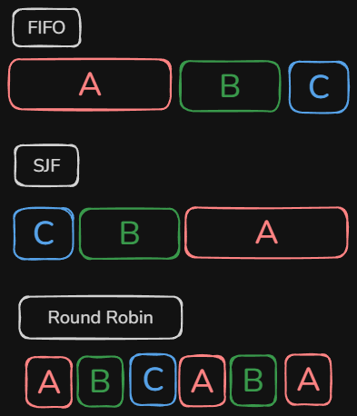

When multiple processes are running, the OS manages to give the impression that they're all using the processor at the same time. But this isn't the case at all. In truth, what's actually happening is that the operating system rapidly switches the CPU between processes, creating the illusion that they are running simultaneously. Despite the incredible pace with which it does so, the Central Processing Unit (CPU) can only work on one task at a time. Granted, there are several nuances in play that keep that statement from being completely true. Modern processors often contain multiple CPU cores, allowing more than one process to execute simultaneously. To keep the discussion simple, however, we'll assume a single-core processor.
The process scheduler is responsible for determining the order in which processes have the processor; the turn order, for lack of better phrase. How it determines said order depends on the Scheduling Algorithm being used. There are several such algorithms that can be used, each with their own effects on a task's response time, how long it is from when the task arrives and when it's first worked on, and turnaround time, how long from arrival to completion. The three we'll focus on here are "First In, First Out", "Shortest Time to Completion", and "Round Robin".
First In, Last Out (FIFO)
Easily the simplist of the algorithms to implement and visualize, FIFO scheduling has tasks be completed in the order they arrived. This simplicity does come with some noteworthy drawbacks, namely in the form of response times being heavily influenced by how long it will take for tasks to be completed. Suppose a task that takes 10 seconds to complete shows up first followed by 3 tasks that take 1 second each. Those three shorter tasks are stuck waiting behind the first task.
Advantages
Simple to implement
Fair arrival order
Disadvantage
Long jobs delay short ones
Shortest Job First (SJF)
This algorithm doesn't have as strict an ordering as FIFO. When a task is completed, SJF looks among the waiting tasks and picks the one that should take the least amount of time to complete. Picture that the processor is already working on a task and three new tasks turn up, a six second task, a three second task, and a four second task, in that order. Under SJF, the scheduler would pick the three second task first, then the four second task, then the six second task. This can get more tasks done in less time than FIFO as the shortest tasks are picked first. But, if short tasks keep coming in, longer tasks may be postponed indefinitely, a problem known as 'Starvation'.
Advantages
Exellent average turnaround time
Finishes many short jobs quickly
Disadvantage
Can starve long jobs
Round Robin (RR)
A relatively complex algorithm to implement, Round Robin scheduling divides processor time into really short blocks (or slices, if you find that easier to picture) and rotates through any task that comes in. Assume there are three tasks, A, B, and C. Under Round Robin, task A would have the processor for a time block, then be put on hold so B can have the next block. Then B is put on hold so C can have the one after. Because each waiting process receives a time slice in turn, response times are generally much shorter than with FIFO. However, whenever the scheduler changes from one process to another, the CPU performs a context switch, saving the state of the current process before loading the next one. And even if this delay didn't exist, there's still the fact that the processor's time is being split across multiple processes! Take the three tasks again, if they're all active, one second for the processor is a third of a second for each task. So each task would take three times as long to complete, which is terrible for turnaround time.
Advantages
Excellent responsiveness
Fair to all processes
Disadvantage
Frequent context switches add overhead

There are many scheduling algorithms beyond the three presented here, and some operating systems combine multiple strategies to balance response time, turnaround time, and fairness. Even so, FIFO, SJF, and Round Robin illustrate the trade-offs operating system designers must consider when deciding how processor time should be shared among competing processes, allowing the OS to keep the computer resposive.